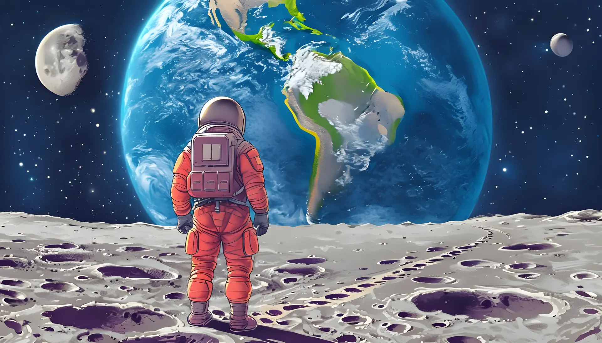

Explora, deja tu huellaExplore, leave your trace
Conectamos a personas apasionadas por el conocimiento con proyectos que generan un impacto real. Cualquier persona puede contribuir y beneficiarse del progreso científico: haz clic aquí y deja tu huella.Connecting people passionate about knowledge with projects that create real impact. Anyone can contribute and benefit from scientific progress: just click here and leave your mark.
Empieza aquíStart hereCifras clarasCero cuentosCon Ciencia
Open DataEngaged ArtCitizen Science